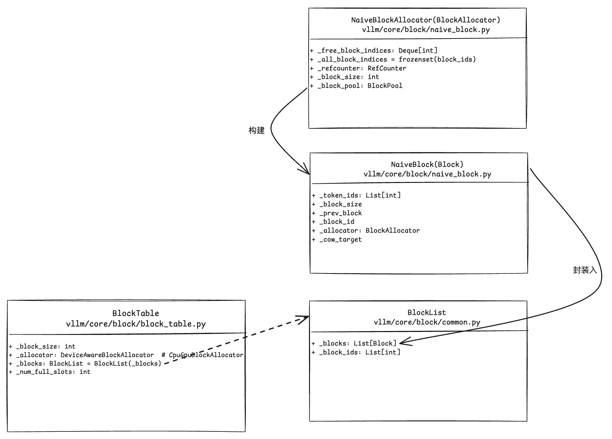

vLLM 源码阅读 - Block Manager 与核心调度逻辑 (part2)
说明：基于 vLLM v0.7.3，commit id:
ed6e9075d31e32c8548b480a47d1ffb77da1f54c (HEAD, tag: v0.7.3)
vLLM 调度逻辑
介绍具体的调度逻辑前，需要梳理一下 block manager 的实现。调度逻辑中，block manager 会作为具体的判断条件。
block manager subsystem 的设计可以参考官方的 PR。
现总结如下：
1 | BlockSpaceManager |
block manager
BlockSpaceManager 的初始化：
1 | # -------------------- |
CpuGpuBlockAllocator.create 如下，创建 CpuGpuBlockAllocator 实例。
1 | # ------------------------ |
现在详细看看 BlockAllocator 的初始化和核心 API。
1 | # --------------------- |
BlockPool 中预先创建的 block 如下：
1 | # vllm/core/block/naive_block.py |
最外层的调用，从 block manager 调用分配的函数。
1 | class SelfAttnBlockSpaceManager(BlockSpaceManager): |
block manager 中涉及的几个重要类的关系如下：
总结上述几个类的调用链和关系如下：
SelfAttnBlockSpaceManager(BlockSpaceManager)调用分配（allocate）的接口，将seq_group传入；- 执行
BlockTable的创建，创建 BlockTable 时传入的参数：CpuGpuBlockAllocator(DeviceAwareBlockAllocator)的实例和seq；SelfAttnBlockSpaceManager(BlockSpaceManager)中管理着 seq_id 到 BlockTable 的映射； BlockTable调用分配接口，根据 seq 的 token ids 数量调用CpuGpuBlockAllocator(DeviceAwareBlockAllocator)的allocate_immutable_blocks和allocate_mutable_block；CpuGpuBlockAllocator(DeviceAwareBlockAllocator)的allocate_immutable_blocks和allocate_mutable_block调用实际底层是NaiveBlockAllocator(BlockAllocator)的分配调用，从而建立 seq <–> block table <–> block 之间的联系。
schedule
总的调度逻辑如下。
1 | # core/scheduler.py |
关于 prefill 阶段的调度：
1 | # core/scheduler.py |
关于 decode 阶段调度：
1 | # core/scheduler.py |
swapped 的调度：
1 | # core/scheduler.py |